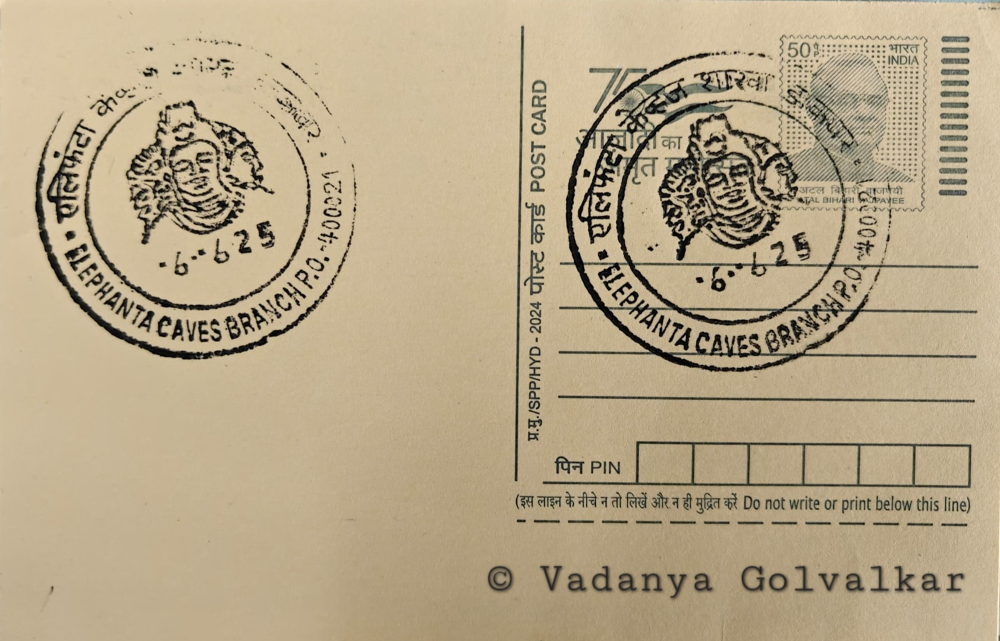

Trimurthi
त्रिमूर्ती


The Trimurti, also known as the Sadashiva or Maheshamurti, takes its name not from the three principal Hindu gods jointly but from a single triple-faced form of Shiva alone, a distinction often lost on casual visitors. The island itself was originally called Gharapuri, meaning "place of caves" or "city of caves" in the local Marathi tradition, until Portuguese sailors arriving in the sixteenth century encountered a large monolithic stone elephant near the shore and renamed the island Elephanta in its honour; that statue later collapsed while being moved and was eventually reassembled and relocated to Mumbai's Victoria Gardens, now Jijamata Udyan, near the Dr. Bhau Daji Lad Museum. The cave complex itself long predates this European encounter, having served as an active site of Shaiva worship for centuries before any foreign name attached to it.
Within Indian rock-cut architecture, the Trimurti occupies a place of particular reverence as one of the most theologically sophisticated single sculptures to survive from early medieval Hindu India, embodying Shiva as Sadashiva or "eternal auspicious one" in a form that fuses three distinct cosmic functions into one visage. The proper right face, calm and holding a lotus, represents Vamadeva, the nurturing, feminine, creative aspect; the frontal face, serene and meditative, is Tatpurusha, the preserving aspect; and the proper left face, fierce with a moustache and serpent, is Aghora or Bhairava, the destructive aspect. This triadic conception of Shiva as simultaneously creator, sustainer, and dissolver of the universe is regarded by art historians as among the most complete visual statements of Puranic Shaiva philosophy carved in stone anywhere in the subcontinent, and it anchors the caves' status as a site of major art-historical and religious importance rather than merely archaeological curiosity.
Scholarly consensus, still debated in particulars, places the excavation of Cave 1 and its Trimurti panel in roughly the mid-fifth to eighth century CE, with many historians favouring completion under the Kalachuri dynasty, possibly during the reign of king Krishnaraja around the mid-sixth century, though earlier attributions to the Rashtrakutas have also been argued. The bust itself rises to a height of roughly seven metres, with separate measurements crediting the sculpted portion at about 5.45 metres high, 6.5 metres wide, and 3.2 metres deep, carved directly into the basalt rock face at the rear of the cave's inner sanctum. Cave 1, the principal of seven caves hewn into the island's hillside, extends some 39 metres from its front colonnaded entrance to the back wall, its square central hall supported by rows of pillars, and it houses additional large relief panels depicting Shiva as Ardhanarishvara, Gangadhara, and Nataraja, alongside a free-standing linga shrine.
The caves suffered severe depredation during the sixteenth and seventeenth centuries under Portuguese colonial administration, when soldiers garrisoned on the island reportedly used several of the relief panels, along with an inscribed stone tablet, for firing practice, mutilating numerous figures; the Trimurti itself is widely held to have been spared the worst of this damage, though the site as a whole lost much of its original detailing and colour. Cannon were also reportedly stored within the caves at points during this period, compounding structural wear alongside natural erosion from the coastal climate. The site passed to British administration in the nineteenth century and later to the government of independent India, with the Archaeological Survey of India assuming custodianship and undertaking substantial conservation campaigns, notably intensive stabilisation and cleaning work carried out through the 1970s.
Elephanta was inscribed on the UNESCO World Heritage List in 1987 in recognition of its rock-cut sculptural programme, and the Archaeological Survey of India continues to manage the site today in coordination with the Maharashtra state tourism and forest departments, which oversee the ferry access, boardwalk, and narrow-gauge toy train connecting the jetty to the cave complex on Gharapuri island. The annual Elephanta Festival of classical dance and music, held on the island under state cultural sponsorship, has become a fixture that draws visitors alongside the roughly ten thousand daily tourists the caves see during peak season. Access remains solely by a roughly one-hour boat crossing from the Gateway of India in Mumbai, a journey that keeps the Trimurti's setting much as it has been for visitors and pilgrims for generations, poised between harbour traffic and the quiet of the excavated hillside.
| Date of Introduction | April 16, 1992 |
|---|---|
| Address | Branch Postmaster, |
| Elephanta Caves BO, | |
| Mumbai (dt.), Maharashtra - 400021. |